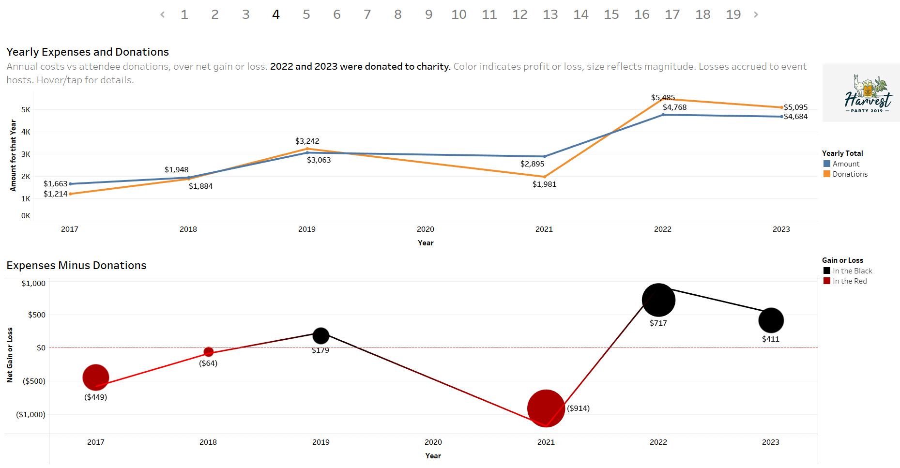
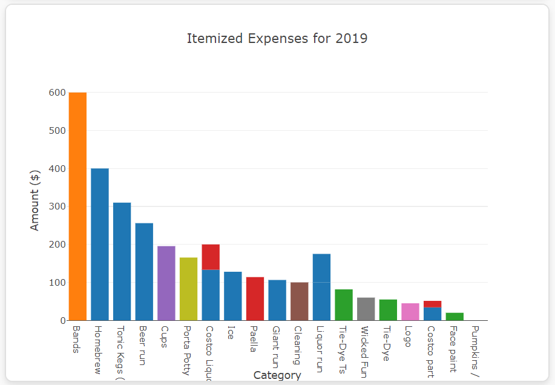

This project analyzed financial data from an annual fundraiser using Python for exploratory data analysis, uncovering key trends in expenditures, donations, and attendance. A JavaScript-based mobile-responsive website presents these insights through interactive charts for donor transparency. Tableau was used to create an explanatory data analysis with interactive dashboards, visualizing donation trends, spending breakdowns, and cost per attendee to aid stakeholders in making data-driven decisions for future events.
Project Links
Project Overview
The Harvest Party is an annual fundraiser that supports the Capital Area Food Bank, bringing together the community with live music, food, and drinks. This project allowed me to merge my passion for data science with an event beloved by my personal and professional network, serving as both an introduction to my skill set and a platform for broader portfolio projects.
The process began with an exploratory data analysis (EDA) in Python, where I organized and cleaned several years of financial data. Visualizations were generated with Matplotlib, Seaborn, and Plotly. Through this EDA, I identified trends in expenditures, donations, and attendance, which informed the next stages of the project. In data science, this stage is akin to laying a foundation — uncovering insights and ensuring the data is ready for further analysis and visualization, akin to a professional scratch pad.
Next, I built a mobile-responsive website using JavaScript, styled with Sass and Bootstrap. This site acts as a transparency tool for stakeholders and donors, providing interactive Plotly.js visualizations of the fundraiser’s financials. Features like dynamic charts and custom animations (including a thematic 2020 COVID-19 masks animation) ensure the site is both engaging and informative. It’s designed to help the planning committee make data-driven decisions while building trust with donors by offering clear insights into financial allocations.
To further communicate these insights, I used Tableau to create a series of interactive dashboards as an explanatory data analysis. Communicating insights is the culmination of a data science project. These visualizations focus on areas like donation trends, expenditure breakdowns, and cost per attendee, making it easy for stakeholders to understand the financial health of the fundraiser and identify areas for future optimization.
By combining technical tools and visual storytelling, this project highlights my ability to not only analyze data but also present it in ways that engage both technical and non-technical audiences.
Gallery
 Tableau Dashboard of Net Annual Gain or Loss
Tableau Dashboard of Attendees and Cost per Person
Tableau Dashboard of Annual Expenses
 Web Bar Chart of Expenses by Category
Web Bar Chart of Expenses by Category
 Web Bar Chart of Itemized Expenses 2019
 Web Sunburst Plot
Web Sunburst Plot
 Google Colab Exploratory Data Analysis Box and Whisker Plot
Google Colab Exploratory Data Analysis Box and Whisker Plot


 Images courtesy of the Harvest Party Planning Committee
Images courtesy of the Harvest Party Planning Committee
References
Dataset provided by the Harvest Party Planning Committee.